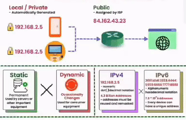

IP addressing
IP Addressing
Internet Protocol (IP) addresses are unique identifiers assigned to devices on a network. They allow for communication and routing of data packets across the internet. There are two main versions of IP addresses: IPv4 and IPv6.
IPv4 Addressing
IPv4 addresses consist of 32 bits, typically represented in a dotted decimal format (e.g., 192.168.1.1). Each octet (8 bits) is separated by a period. The address space of IPv4 is limited, leading to the development of IPv6.
IPv6 Addressing
IPv6 addresses consist of 128 bits, providing a significantly larger address space compared to IPv4. It is represented in eight groups of four hexadecimal digits separated by colons (e.g., 2001:0db8:85a3:0000:0000:8a2e:0370:7334).
Both IPv4 and IPv6 addresses serve different purposes, with IPv6 gradually being adopted to accommodate the growing internet needs.